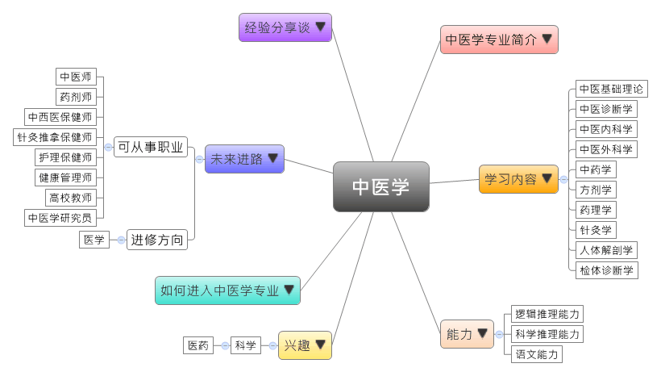

- 专业大观园
-

- 专业介绍
-
什么是中医学？
中医学是一门研究人体的生理病理、疾病与诊断、防治与调养的传统医学。中医源于原始社会中神农氏为民尝百草，其医学理论在春秋战国时期已然形成，因而在职场上，中医在国内有坚强而厚实的群众基础，社会对于中医学人才的需求是长期存在的。然而中医学专业在就业上仍比西医专业困难，中医学专业的毕业生应该把就业重心放在偏乡的中小城市或县城等；在生活中，随处可见中医学的应用，中国人以食为天的生活信念更是充满了中医的智慧。例如，食物中有许多是属于药食同源的，如橘子、南瓜子、杏仁、核桃、山楂、花椒、小茴香、桂皮、蜂蜜、龙眼肉等。这些不但我们经常摄取的食物，也是具有疗效的中药材。
中医学专业除了训练学生具备中医药学的基本理论与医学知识，也通过中医临床医疗技能，如号脉、针灸、推拿等专业训练，让学生具有在中医领域进行临床诊疗和科学研究的能力。
中医学号脉教学示范 中医学拔罐疗法演练
- 学习内容
-
中医学专业学生主要学习阴阳五行、四诊八纲、病因学说，以及中药方剂等基础学说与理论。中医学重实务应用，相关的药用植物、中药药理、中药药动、中药内科、中药外科、中药分析、针灸等都是必修课程，同时也会接受针灸、拔罐、推拿、跌打、气功、按摩、食疗等各种治疗手段的专业训练。
本专业学习方向通常分为三类：药理类、诊断类和古典医籍类；其他学校也有开设影像诊断学或西医内外科学等课程，为学生未来就业做好准备。中医学专业主干课程有：中医基础理论、中医诊断学、中药学、方剂学、内经选读、伤寒论选读、金匮要略选读、中医内科学、中医外科学、针灸学、人体解剖学、药理学、检体诊断学……等。此外，中医学的实践性教学见习课程不少于4周，而毕业实习则不少于48周。
本专业可以习得的知识与获得之能力、技能列点：第一，掌握中医药与中药方剂学的基础与临床医学理论；第二，具备运用四诊（望、闻、问、切）与治疗八法（汗、吐、下、和、温、清、补、消）来进行辨证论治，以及初步处理各种急重病症的能力；第三，熟悉国家卫生工作方针与相关法规，并随时更新中医学相关的现代医学知识与技术。
- 能力
-
中医学专业学生，需具备以下能力：
相关性向能力 说明 科学推理能力  具备中医辨证（望、闻、问、切）与论治的能力
具备中医辨证（望、闻、问、切）与论治的能力
熟练中医的针灸、拔罐、推拿、按摩、气功、药膳等非药物疗法的技术逻辑推理能力 具备病理批判与独立思考的能力
能从病因提出治疗的假设并进行验证语文能力 理解病人问症的含义与重点
条理分明地传达中医学、中药学和预防医学的观念
- 兴趣
-
若你对下列活动或事物有高度兴趣，可考虑进入中医学专业学习：
科学 医药 乐于从事各种助人的活动
对疾病、治疗、饮食设计与医药方面的知识感兴趣
喜爱阅读文字、擅长背诵各种知识，且能够自娱娱人
- 如何进入此专业
-
下面列举开设中医学专业的211工程重点大学院校：
- 未来进路
-
可从事职业
由于现代人注重养生，具有温和且持久疗效的中医受到社会大众的喜爱，因此社会对中医学专才仍有相当的需求。学生毕业后可进入医疗业、保健疗养相关的行业从事医疗工作。同时也可在医疗相关的投资管理公司、电子科技公司中从事网上医疗服务咨询工作；最后则是在各高等院校或科研部门从事学术与教学的工作。在工作职场上皆能发挥病因诊断、保健身体等专长：
行业 职业 医疗卫生服务 中医师、执业药师、药剂师、针灸推拿保健师 健康管理与促进服务 中药咨询师、中西医保健师、护理保健师、芳香保健师、健康管理师、营养师 教育 高校教师 科学研究 中医学研究员 进修方向以下列举中医学专业毕业生可以继续修读之学科门类、一级学科与硕士点：
学科门类 一级学科 硕士点 医学 中医学中医基础理论、中医内科学、中医外科学、针灸推拿学、方剂学、中医医史文献、中医诊断学、临床评价、中医伦理学、康复医学与理疗学、中医工程、临床中药学、中药资源学、中药炮制学、中药分析学、中药药理学、中医养生康复学 临床医学（专业硕士）中医内科学、中医外科学、中西医结合临床 中西医结合中西医结合临床、中西医结合循证医学、中西医结合护理学 注：临床医学硕士报考资格 临床医学硕士报考资格
临床医学硕士报考资格1.具有国家承认学历的大学本科毕业人员
2.具有下述条件之一的同等学力的人员：
（1）获得国家承认的高职高专毕业学历后满2年或2年以上
（2）国家承认学历的本科结业生和成人高等学历教育应届本科毕业生
- 经验分享谈
-
昼日把脉看病，夜间读书笔耕——毛德西中医内科主任医师
毛德西教授从事中医临床工作逾50年，谙熟经典，旁通流派，基本理论扎实，虚心学习百家。对心脑血管疾病、消化疾病，以及疑难杂病研究颇多，总结出治学经历为“读经典、多临床、拜名师、勤总结”四部曲。50余年来，他先后拜师12位，近几年他以七十余岁的高龄，带领弟子拜访5位国医大师，并亲自撰写学习体会，发表于报端。他所研制的治疗心脑血管疾病的“五参顺脉胶囊”、治疗慢性肝病的“肝达舒胶囊”等，为河南省中医院传统用药保留专项技术。他在继承先辈经验的基础上，善于汲取当代名家的经验，并创新性的应用于临床，使之临床疗效不断提高。
毛德西教授医德高尚，关爱病人，他常对年轻学子说“当百姓医，首先要体恤民心，将心比心，学习张仲景的品德，用最廉价的药，去解除病人的痛苦，这才是‘大医精诚’的精神。”他还通晓中医养生学，经常被邀宣讲养生知识，病人在他那里既治疗疾病，又获得了保健常识，所以他的诊室真正是“门庭若市、车水马龙”，就诊者遍及省内外和国外的朋友。
昼日把脉看病，夜间读书笔耕，毛德西教授五十余年从未休止。他所读的书，除中医典籍外，还有文、史、哲，以及科普类书籍，他在退休后学会了电脑，他说“医学是一门综合的复杂艺术，要借用其他科学知识来丰富自己的头脑，开阔思路，多项思维，不要‘各承家技，始终顺旧’，这样才能使中医学走在时代的前列，才能更广泛更深层次地为中国及世界各国民众服务。”【资料来源：国家级名老中医——毛德西教授.】